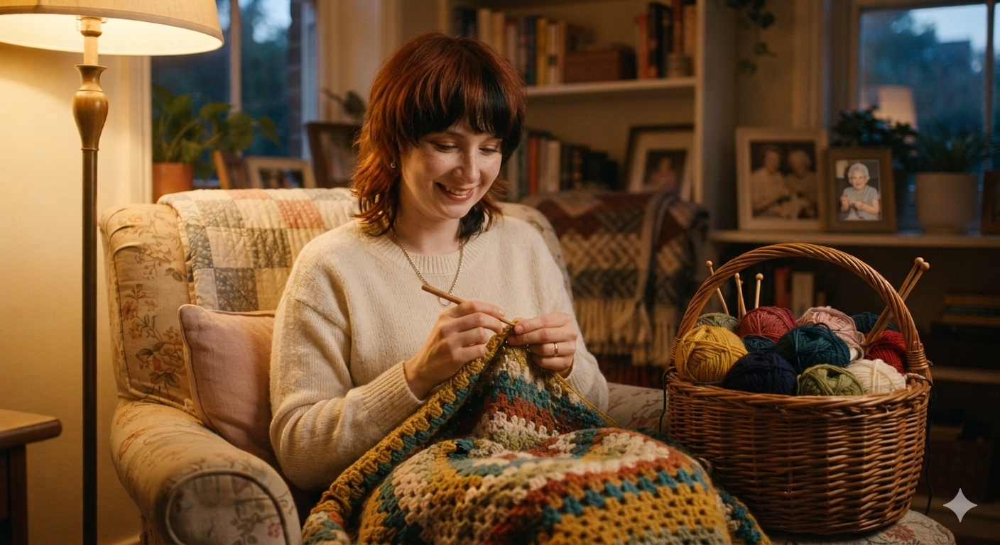

The Stories My Grandma Told Between Rows
How sitting beside her taught me that crochet is never really about rushing to finish—it is about the patience, warmth, and stories shared along the way.
Read Story →Hi, I'm Ana. Welcome to 419 Crochet Creations—a cozy corner for written crochet patterns, honest stories about mom life, and the timeless wisdom my grandma wove into every loop.
Explore Patterns
419 Crochet Creations began with memories of watching my grandma's hands move effortlessly with a crochet hook while sharing stories from her life. Today, between school drop-offs, nap times, and busy mom moments, crocheting keeps me grounded and connected to her. I created this space to pass those patterns and cozy reflections along to you.
Step-by-step patterns written for quiet evenings and nap-time crafting.
Little notes on motherhood, memory-keeping, and finding calm in every stitch.
How sitting beside her taught me that crochet is never really about rushing to finish—it is about the patience, warmth, and stories shared along the way.
Read Story →Why keeping a small project bag by the couch helps me unwind after bedtime, even when I only have time for three rows before falling asleep.
Read Story →Whether you have a question about a pattern, want to share a story about who taught you to crochet, or just want to say hi from one mom to another, I would love to connect.
Write to Ana